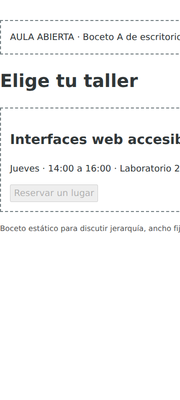

APE 5 · Grupo 6
Aula Abierta
Diseño de Interfaces Web Adaptables
Fase 1 y Fase 2 de cierre
William Martínez, Emilio Abril, Pablo Lozada,
Manuel Cusme y Jonathan Gamboa
01 · Fase 1
Diagnóstico del boceto A
960 px de documento en 360 px de viewport.
600 px de desborde en el registro de referencia.
El panel Mi reserva queda fuera de la vista inicial. A tiene el botón deshabilitado.

02 · Aplicación al proyecto
Ficha y regla de interacción
El estudiante consulta el taller del jueves, de 14:00 a 16:00 en Laboratorio 2.
Confirma, reconoce el estado y puede cancelar.
Una reserva activa por instancia. El estado se reinicia al recargar.
03 · Construcción
HTML5 y CSS Mobile First
.panel { display: grid; }
@media (min-width: 48rem) {
.panel { grid-template-columns: 3fr 2fr; }
}Una columna móvil y dos desde 768 px con configuración inicial de 16 px.
El DOM conserva el orden. Botones nativos y foco visible.
04 · Interacción
Reserva reversible
Confirmar: reservaActiva y disabled bloquean repetición. El mensaje cambia y cancelar.focus() dirige la continuidad.
Cancelar: se libera el estado, se habilita Reservar y reservar.focus() devuelve el foco.
role=status expone el cambio de estado en el código.
05 · Evaluación técnica
Pruebas Realizadas
13 comprobaciones de lógica y 16 de estructura correctas.
El registro de Fase 1 documenta 0 px de desborde en B a 320, 360, 768 y 1366 px de ancho.
La matriz del cierre define los cuatro tamaños exactos y los tres estados con valores de ensayo identificados.
06 · Pruebas Realizadas
Análisis de cinco casos
Datos de ejemplo generados para el ejercicio académico. No corresponden a participantes observados.
| Caso | Tiempo s | Errores | Ayudas |
|---|---|---|---|
| E01 | 28 | 0 | 0 |
| E02 | 35 | 1 | 1 |
| E03 | 22 | 0 | 0 |
| E04 | 25 | 0 | 0 |
| E05 | 30 | 0 | 0 |
Media: 28 s. Cuatro de cinco cumplen el criterio en este conjunto de ejemplo.
07 · Defensa
Ejercicio QA y UX
Punto de corte: cambia la cuadrícula y conserva la secuencia del DOM.
Duplicados y foco: guarda de estado, disabled y control disponible.
Comprensión: el ajuste en píxeles y el reconocimiento del resultado requieren evidencias diferentes.
08 · Responsabilidades
Cinco aportes del equipo
| Integrante | Rama | Responsabilidad |
|---|---|---|
| William | plan-clases | Planificación y presentación |
| Emilio | prototipo-html | Boceto, ficha y HTML |
| Pablo | interfaz-responsive | CSS y JavaScript |
| Manuel | pruebas-informe | Pruebas e informe |
| Jonathan | usabilidad-defensa | Usabilidad y QA/UX |
09 · Cierre
Conclusiones del trabajo
La ficha transforma el problema de ancho fijo en criterios concretos.
La interfaz adaptable conserva la lectura y permite corregir la reserva.
La evaluación identifica el origen y alcance de cada resultado.